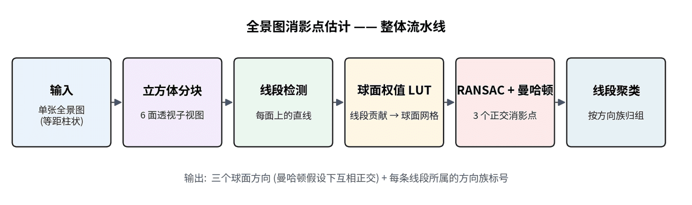
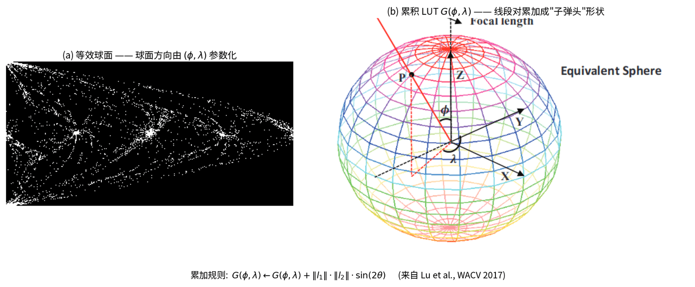

Robust Manhattan directions for panoramic images.
Panorama Vanishing Point Estimation
A spherical vanishing-point estimator for equirectangular panoramas, using cube-face line detection, weighted lookup tables, and Manhattan triplet fitting.
Problem
Classic pinhole vanishing-point methods do not transfer directly to panoramas because image lines bend in equirectangular space and global spherical evidence is expensive to evaluate repeatedly.
Approach
- Detect local perspective line segments after cube projection to avoid equirectangular line distortion.
- Map line evidence onto a spherical parameter space and accumulate support in a lookup table.
- Sample and score Manhattan direction triplets efficiently with constant-time candidate evaluation.
My Contribution
I independently designed and implemented the complete panoramic vanishing point estimation module, from algorithm to C++ implementation and evaluation.
On the algorithm side, I built the core modules:
- Cube-face projection and line segment detection for distortion-free line extraction
- Spherical weighted lookup table construction enabling constant-time RANSAC candidate evaluation
- Manhattan triplet fitting under orthogonal constraints with brute-force sampling
Outcome
The module provides stable room orientation cues for downstream rectification, plane reasoning, and indoor reconstruction initialization.

